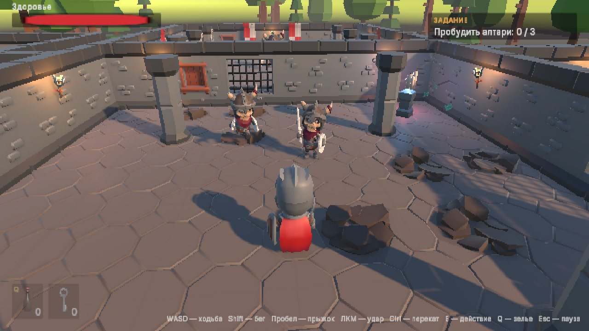

Кристальный сборщик
Катите шар по парящим островам и соберите все кристаллы, пока не вышло время. Не упадите и не попадите под шипастые шары!
WASD — катиться · пробел — прыжок · Esc — пауза
Две игры из книги — от маленькой аркады до экшена с боссом. Запускайте прямо в браузере, скачивайте сборки для Windows и macOS, изучайте исходный код.
Катите шар по парящим островам и соберите все кристаллы, пока не вышло время. Не упадите и не попадите под шипастые шары!

Рыцарь исследует древние руины: бои со скелетами, ключи и рычаги, три алтаря, святилища-сохранения и страж с двумя фазами.
Максим Бойко. «Unity 6: от первой игры до публикации». Полное практическое руководство: интерфейс и C#, физика и графика, анимация — от Mecanim до процедурной, паттерны, ИИ, оптимизация, сборка и публикация.
Книга на ЛитРес · Книгу можно найти на ЛитРес, печатное издание — скоро.
Об авторе. Максим Сергеевич Бойко — основатель издательства игр Devilime, разработчик игр, предприниматель.